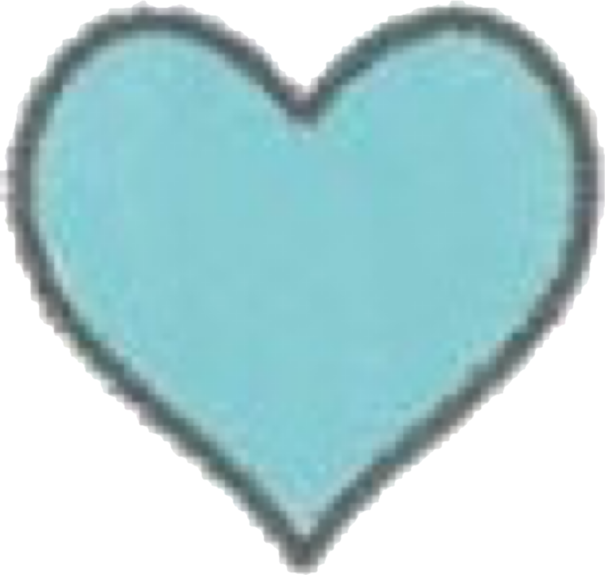
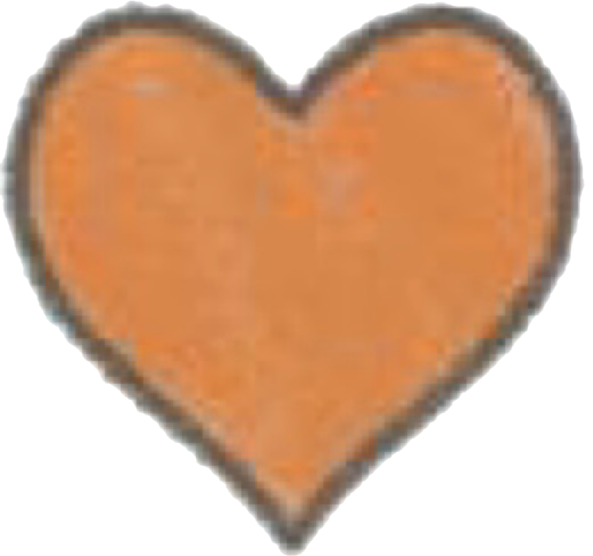

member
山田涼介
 知念侑李
知念侑李 中島裕翔
 有岡大貴
八乙女光
伊野尾慧
高木雄也
薮宏太
色んな観客の皆様がご参加のこち #HeySɑyJUMP ニューアルバム「#FILMUSIC!」ジャケット写真！お支度の様子も入った撮影メイキングは初回限定盤2に収録の特典映像【Jacket Shooting】にてご覧いただけます！ pic.twitter.com/GoJjx7HmjL
— JUMPぅ to dream (@wolpuu_official) July 23, 2022
2007年9月24日ジャニーズ事務所から10人組、平均年齢15歳、ジャニーズ史上最多で最年少グループとして結成されました。
同年11月14日に「Ultra Music Power」でデビューしました。
さらに同年12月22日に東京ドームにて単独コンサートを行い、東京ドームでの史上最年少記録を更新。
発売したシングル、アルバム全てオリコン週間ランキング1位を獲得。
2011年に森本龍太郎くんが無期限の活動休止処分となり、それ以降は9人となりました。
2018年に岡本圭人くんが2年間ニューヨークへ留学へ行き芸能活動を一時休止、その後復帰すると願っていましたが、2021年にHey!Say!JUMPを脱退し、俳優業を中心に活動しています。
2022年1月に八乙女光くんが突発性難聴を発症したことが発表され、現在一時的に活動休止しています。
知念侑李